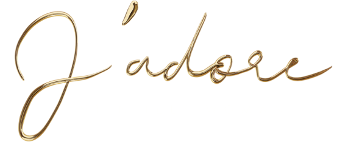

{{EN: JASMINE SAMBAC / CENTIFOLIA ROSE / GRASSE TUBEROSE / SANDAL WOOD||PL: JAŚMIN SAMBAC / RÓŻA CENTYFOLIA / TUBEROZA Z GRASSE / DRZEWO SANDAŁOWE}}
{{EN: An endless burst of flowers released in a bouquet that infinitely exalts centifolia rose, jasmine sambac, ylang-ylang and grasse tuberose, refined by the woody accents of a creamy sandalwood.||PL: Niekończąca się eksplozja kwiatów, która nieskończenie emanuje różą Centyfolią, jaśminem Sambac, ylang-ylang oraz tuberozą z Grasse, podkreślona przez drzewny akcent kremowego drzewa sandałowego.}}